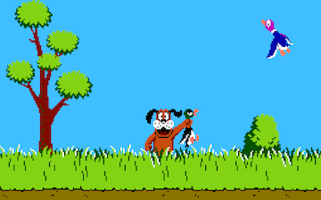

Objectives
- Program with JavaScript.
- Use the Document Object Model.
- Render 2D graphics on the web browser with HTML5's canvas.
Overview

In this assignment, you will start to build modified, playable version of Duck Hunt using JavaScript, playable on the web browser.
The goal of the game is self-explanatory: shoot the duck(s) in the air.
A playable (Flash) version of the game, and also close to the original Nintendo Entertainment System (NES) version, is available at http://www.cyberiapc.com/flashgames/duckhunt2.swf.
Instructions
You will write one file: game.js. This file will contain all the game logic including initialization, rendering all the graphics, handing keypresses, and animation.
For this assignment, you will only draw a few graphics to the canvas in a method named draw(). The following must be drawn:
- The skies. Use color code
#87CEEBfor blue. - The dirt road. Use the color code
#C96A1Bfor dirt brown. - The bushes
- A tree
- The dog sniffing the road.
- Five flying birds in the skies (bird color of your choice).
Programming should be done on your local computer.
Getting Started
- Download the file
duckhunt.zipdirectly into your private repository on your computercomp20-firstletterofyourfirstnameandlastname(the same folder you used for Lab 4). - Unzip the ZIP file. A folder
duckhuntwith files will be created. - Remove the ZIP file
duckhunt.zip - Run
git add . - Run
git commit -m "Adding Duck Hunt" - Run
git push
You are provided with four files in the duckhunt directory:
index.html- HTML page with a canvasstyle.css- The stylesheetassets/duckhunt.png- A sprite sheet containing all the images, sprites, necessary for the game.game.js- Where you will write all your JavaScript code.
You are not allowed to create additional stylesheets or HTML files. You are also not allowed to use jQuery!
About Sprite Sheets
One of the issues that you discovered in Lab 2 is that when assets are loaded for a web page (e.g., images, stylesheets), a lot of time is spent on waiting, the time between sending the HTTP request and receiving an HTTP response. Games typically use lots of images. If there are lots of individual images to be downloaded, then the total amount of time spent waiting will be high. A way to alleviate the waiting problem is to only have one image, but the image contains all the images necessary for the game. This image is better known as a sprite sheet. In this assignment, the image assets/duckhunt.png is a sprite sheet.
The JavaScript Canvas API
A canvas is simply a drawing area. HTML5 introduces a new element called <canvas>. Drawing can be done onto the canvas via of the JavaScript Canvas API. The Canvas API contains many powerful methods: from drawing lines to image manipulation.
The API also contains a method, drawImage() that allows slicing an image. That is, only draw parts of an image onto the canvas. Please refer to https://developer.mozilla.org/en-US/docs/Web/API/CanvasRenderingContext2D for the parameters and usage of drawImage(). To get the coordinates (in pixels) of the part of the image you want to render, you can use tools such as Preview on Mac OS X, Gimp, or Photoshop.
There is an excellent tutorial on the JavaScript Canvas API through Mozilla at https://developer.mozilla.org/en-US/docs/HTML/Canvas/Tutorial
The <canvas> is initially blank, and to display something a script (your game.js) first needs to access the rendering context and draw on it. The canvas element has a DOM method called getContext(), used to obtain the rendering context and its drawing functions. getContext() takes one parameter, the type of context.
canvas = document.getElementById('tutorial');
ctx = canvas.getContext('2d');
Calling a JavaScript Function On Page Load
When a web page has completely loaded all content (including images, JavaScript files, CSS files, etc.), you can execute JavaScript code immediately via the onload attribute for the body element. That is:
<body onload="SomeJavaScriptCodeOrFunction">
Viewing Your Work
Open the index.html file on a web browser on your web browser (Chrome, Firefox, Safari, the latest version of Microsoft Internet Explorer)
For obvious reasons, you are not allowed to make your work publicly accessibly on the web --yet.
The README File
Every assignment shall include a README file that describes the work. This description must:
- Identify what aspects of the work have been correctly implemented and what have not.
- Identify anyone with whom you have collaborated or discussed the assignment.
- Say approximately how many hours you have spent completing the assignment.
- Be written in either text format (
README.txt) or in Markdown (README.md). No other formats will be accepted.
Course and Assignment Policies
Please refer to the course home page.
Submitting the Assignment
Push all the files to the private repository that I created for you in a folder named duckhunt. Say that your private repository is named comp20-mchow, make sure all the files are pushed to comp20-mchow/duckhunt.
Assessment
- (8 points) The
draw()method ingame.jsdraws all the required items on the canvas - (2 points) Programming style - documentation addresses exactly the key issues, and degree of detail is exactly appropriate; well thought out and implemented code; well chosen names for functions and their parameters.
- (-2 points) JavaScript errors exist in console
- (-2 points) No
README - (-2 points) Creates additional stylesheets or HTML files
- (-2 points) Files are not in your private repository in a folder named
duckhunt - (-10 points) You used jQuery
- (-1 point) Nonsense git commit messages or did not commit much